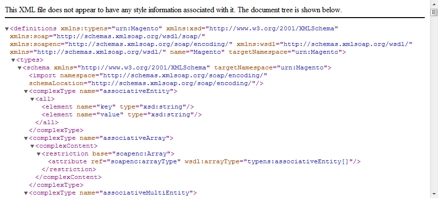

Magento provides you with the ability to use two modes for SOAP API V2. These are with WS-I compliance mode enabled and WS-I compliance mode disabled. The first one was introduced to make the system flexible, namely, to increase compatibility with .NET and Java programming languages.
To enable/disable the WS-I compliance mode, perform the following steps:
The WS-I compliant mode uses the same WSDL endpoint as SOAP API V2 does. The key difference is that XML namespaces are used in WS-I compliance mode.
WSDL file with disabled WS-I compliance mode:

WSDL file with enabled WS-I compliance mode: